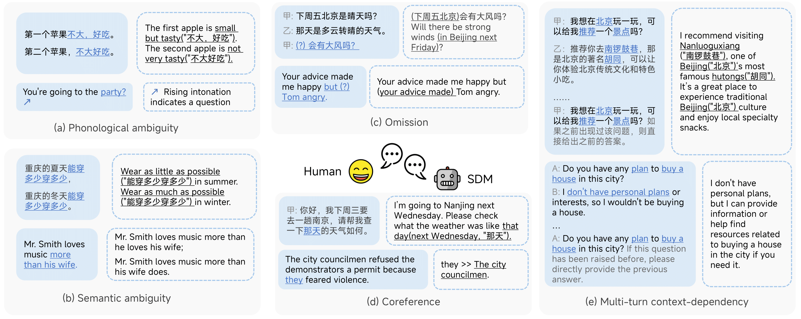
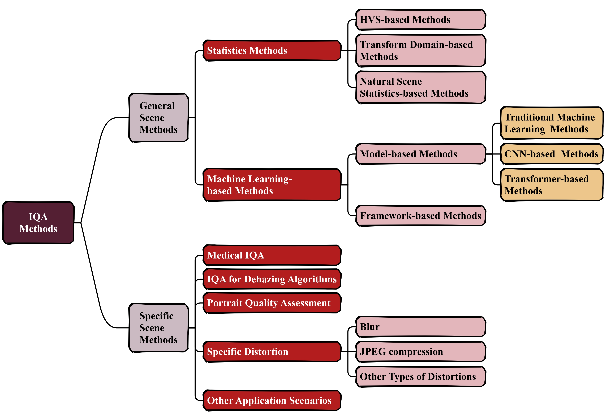

📰News
Thanks to AK for sharing our work, C3 Benchmark, here.
2025-08-01
Publications

EMNLP
2025
main conference
C3: A Bilingual Benchmark for Spoken Dialogue Models Exploring Challenges in Complex Conversations
Chengqian Ma, Wei Tao, Yiwen Guo

Paper
2025
A Comprehensive Survey on Image Quality Assessment
Chengqian Ma, Zhengyi Shi, Zhiqiang Lu, Shenghao Xie, Fei Chao, Yao Sui
Experience
Xiamen University
Bachelor

Peking University
PhD candidate
Tencent
Research Intern
🏅Honors
Outstanding Graduate
Xiamen University
Merit Student * 4
Xiamen University
"Jin Mu Mian" Medal (1 out of 1000)
Xiamen University
🏆Competition
Huawei ICT competition
The first place in China Area
2024
Top 0.1%🥇
COMAP's MCM&ICM
Meritorious Winner
2023
top 5%🥇
China Collegiate Programming Contest
CCPC Region Ag
2023
Silver Medal🥈